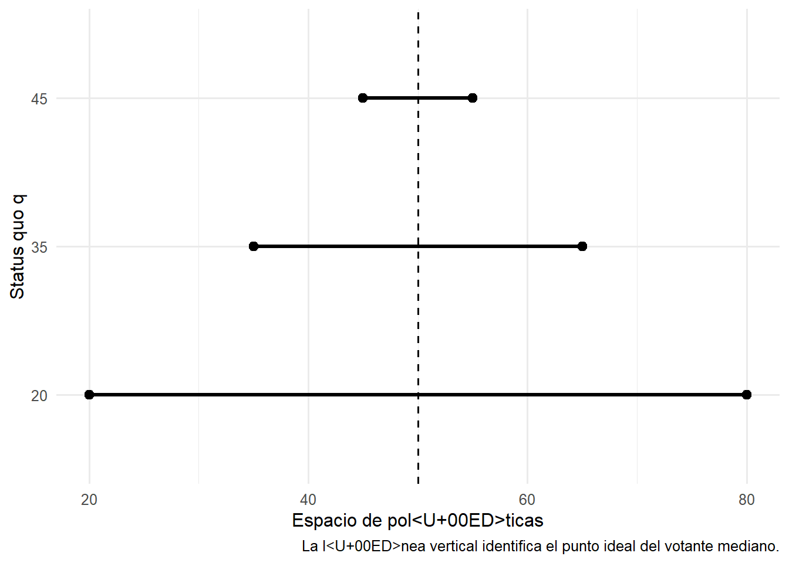
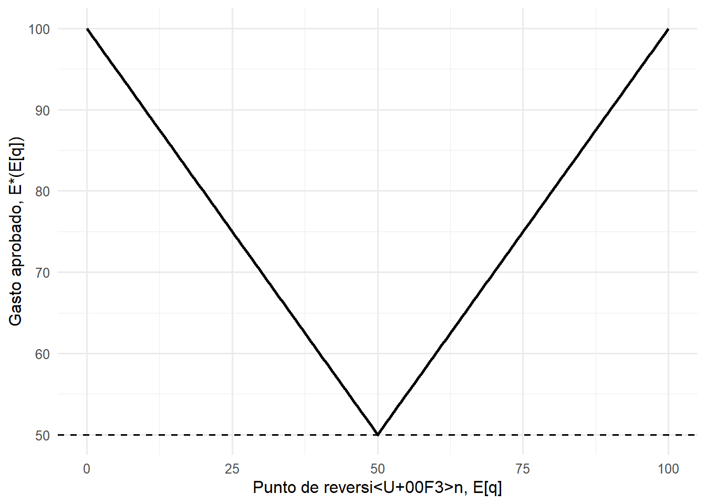

1Interacción estratégica, instituciones y poder de agenda
De la teoría espacial del voto a Romer y Rosenthal
1.1 Parte I. De la interacción social a la teoría espacial del voto
1.1.1 Política como interacción estratégica
La política ocurre en contextos de interdependencia. Las decisiones de una persona, organización o grupo producen consecuencias que dependen también de lo que otros hacen, de lo que esperan que otros hagan y de las reglas que organizan esas interacciones. Una legisladora decide cómo votar considerando la propuesta que enfrenta y las consecuencias de aprobarla o rechazarla. Un partido decide qué posición adoptar considerando las respuestas de otros partidos y de los electores. Un gobierno formula una propuesta anticipando la reacción del Congreso.
La teoría de juegos proporciona un lenguaje para representar este tipo de situaciones. Su objeto central son problemas en los que el resultado de una decisión depende de las decisiones de más de un actor (Rasmusen 2006; McCarty y Meirowitz 2007).
Como primera guía, podemos representar una situación política mediante seis preguntas:
Los jugadores son las unidades capaces de tomar decisiones dentro del problema. Pueden ser individuos, partidos, organizaciones, gobiernos, burocracias o países. La elección depende del nivel de análisis pertinente para la pregunta que queremos responder.
Las acciones describen qué puede hacer cada jugador. Un legislador puede votar a favor o en contra. Un gobierno puede proponer distintos niveles de gasto. Un partido puede escoger una posición dentro de un espacio ideológico. En otros problemas, el conjunto de acciones puede ser continuo:
\[
a_i\in A_i\subseteq \mathbb{R}.
\]
Las preferencias representan cómo cada jugador ordena los posibles resultados. Utilizaremos funciones de utilidad para expresar ese ordenamiento. Si \(x\) representa un resultado político,
\[
u_i(x)
\]
indica cómo el jugador \(i\) evalúa ese resultado.
La racionalidad instrumental agrega una hipótesis acerca de la acción. Dadas sus preferencias, las alternativas disponibles y sus creencias acerca del entorno, el jugador escoge la acción que espera que produzca el resultado que más prefiere. Cuando existe incertidumbre, podemos representar este problema como
Esta representación deja abierta la naturaleza de la motivación. Un jugador puede valorar ingresos, políticas públicas, permanencia en el poder, prestigio, bienestar colectivo o cualquier otra consecuencia. La teoría requiere especificar qué valora. La racionalidad instrumental permite estudiar cómo actúa dadas esas preferencias.
Las reglas determinan qué acciones son posibles, quién puede actuar, en qué orden y cómo esas acciones se transforman en resultados. Mayoría simple, poder de veto, control de agenda, quórums, elecciones periódicas y procedimientos legislativos son ejemplos de reglas que modifican una interacción.
La información determina qué conoce cada jugador cuando toma una decisión. Puede existir información completa acerca de las preferencias y acciones disponibles de los demás, o pueden existir distintos tipos de incertidumbre y asimetrías de información.
Finalmente buscamos una solución. Queremos identificar comportamientos mutuamente consistentes dadas las preferencias, las acciones, las reglas y la información del juego.
Modelar consiste en construir un mapa simplificado de una interacción. La utilidad de ese mapa depende de que conserve los elementos necesarios para explicar el fenómeno que queremos estudiar y descarte aquellos que no son necesarios para esa pregunta.
1.1.2 Un primer modelo político: elegir una política en un espacio continuo
Consideremos un grupo de \(n\) personas que debe escoger una política pública. Supongamos que las políticas posibles pertenecen a un continuo:
\[
x\in X\subseteq\mathbb{R}.
\]
Podemos pensar en \(x\) como gasto público, nivel de impuestos, grado de regulación, generosidad de un programa o cualquier otra decisión susceptible de ordenarse sobre una dimensión.
Cada individuo \(i\) tiene una política ideal:
\[
x_i.
\]
Una representación especialmente sencilla de sus preferencias es
\[
u_i(x)=-(x-x_i)^2.
\]
La utilidad alcanza su máximo cuando
\[
x=x_i
\]
y disminuye a medida que la política se aleja de ese punto.
Esta estructura representa single-peaked preferences. Cada persona tiene una alternativa que prefiere a todas las demás y su valoración disminuye a medida que nos alejamos de ella en cualquiera de las dos direcciones (también puede ser útil bidimensional para algunos casos de interés).
Supongamos tres votantes cuyos puntos ideales satisfacen
\[
x_1<x_2<x_3.
\]
Si se enfrentan dos alternativas \(x\) e \(y\), el votante \(i\) apoya \(x\) cuando
\[
u_i(x)>u_i(y).
\]
Con preferencias cuadráticas esto equivale a
\[
|x-x_i|<|y-x_i|.
\]
Cada persona vota por la alternativa que se encuentra más cerca de su punto ideal.
Figura 1.1: Preferencias espaciales con tres votantes.
La decisión colectiva se obtiene mediante mayoría simple. Podemos escribir
\[
x\succ_M y
\]
cuando una mayoría de los individuos prefiere \(x\) a \(y\).
Tenemos ya un modelo político completo en su forma mínima. Existen jugadores, un conjunto de alternativas, preferencias individuales y una regla de agregación.
1.1.3 El votante mediano
Ordenemos los puntos ideales:
\[
x_1\leq x_2\leq\cdots\leq x_n.
\]
Si \(n\) es impar, existe un votante cuya posición divide al electorado en dos grupos de igual tamaño. Denotaremos su punto ideal por
\[
x_m.
\]
Bajo mayoría simple y preferencias de single-peaked, \(x_m\) derrota por simple mayoría a cualquier otra alternativa. Éste es el resultado central asociado al teorema del votante mediano(Black 1948).
La intuición se observa directamente en el espacio político.
Supongamos una alternativa (por ejemplo, un proyecto de ley que busca implementar y )
\[
y>x_m.
\]
El votante mediano prefiere \(x_m\) a \(y\). También lo hacen todos los votantes cuyos puntos ideales están a la izquierda de \(x_m\). Existe entonces una mayoría que prefiere \(x_m\).
Para una alternativa
\[
z<x_m,
\]
el razonamiento es simétrico. El votante mediano y todos los votantes situados a su derecha prefieren \(x_m\).
Por tanto,
\[
x_m\succ_M x
\qquad
\forall x\neq x_m.
\]
El resultado colectivo queda determinado por la distribución de preferencias:
\[
\boxed{x^*=x_m}.
\]
Este resultado será nuestro primer benchmark institucional. Bajo una dimensión, preferencias single-peaked y competencia abierta entre alternativas, la política preferida por el votante mediano ocupa una posición privilegiada.
También permite introducir una primera forma de estática comparativa. Si cambian las preferencias de la población y el votante mediano se desplaza,
\[
x_m\rightarrow x_m',
\]
la política de equilibrio se desplaza también:
\[
x^*\rightarrow x_m'.
\]
Dado lo anterior:
¿Seguimos obteniendo \(x_m\) cuando modificamos las reglas mediante las cuales las alternativas llegan a ser consideradas?
1.2 Las instituciones modifican el juego
Hasta aquí hemos supuesto implícitamente que cualquier alternativa puede compararse con cualquier otra. Esa hipótesis es una característica institucional del modelo. No obstante, en muchas decisiones políticas las alternativas llegan a votación mediante procedimientos específicos. Alguien decide qué propuesta presentar. Existe un status quo. Algunas decisiones requieren la aprobación de otro actor. Ciertos participantes pueden bloquear cambios. Las propuestas pueden realizarse secuencialmente. Etcétera.
Podemos resumir el resultado político de manera más general como
Mantendremos inicialmente las mismas preferencias. Modificaremos las reglas y el status quo para observar qué ocurre con el resultado. Veamos cómo inciden algunas reglas (o instituciones).
1.2.1 Control de agenda
Supongamos que existe una política vigente
\[
q,
\]
que llamaremos status quo.
Un actor \(S\) posee control de agenda. Puede realizar una propuesta \(p\). La mayoría enfrenta solamente dos alternativas:
\[
\{p,q\}.
\]
Si la propuesta obtiene mayoría, se implementa \(p\). Si es rechazada, permanece \(q\).
Supongamos primero que
\[
q<x_m.
\]
El votante mediano acepta \(p\) siempre que
\[
u_m(p)\geq u_m(q).
\]
Con utilidad cuadrática,
\[
-(p-x_m)^2
\geq
-(q-x_m)^2,
\]
lo que equivale a
\[
|p-x_m|
\leq
|q-x_m|.
\]
Cuando \(q<x_m\), el conjunto de políticas que el votante mediano prefiere al status quo es
\[
p\in[q,\,2x_m-q].
\]
El control de agenda produce entonces una consecuencia inmediata. El agenda setter puede proponer una política situada más allá del punto ideal del votante mediano y aun así obtener su apoyo.
Supongamos que el agenda setter tiene un punto ideal \(x_S>x_m\). Si puede escoger libremente dentro del conjunto aceptable, su propuesta óptima será
\[
p^*
=
\min\{x_S,\,2x_m-q\}.
\]
El resultado puede diferir de
\[
x_m.
\]
La mayoría sigue votando racionalmente. El resultado cambia porque la mayoría debe escoger entre una propuesta y una alternativa de referencia específica.
El status quo también importa. Si disminuye \(q\), aumenta la distancia entre el status quo y el punto ideal del votante mediano. Como consecuencia, se amplía hacia la derecha el conjunto de propuestas que la mayoría está dispuesta a aceptar.
Mostrar código
xm <-50q_values <-c(45, 35, 20)agenda_df <-tibble(q = q_values,upper =2* xm - q)ggplot(agenda_df, aes(y =factor(q, levels =rev(q_values)))) +geom_segment(aes(x = q, xend = upper, yend =factor(q, levels =rev(q_values))),linewidth =1.1 ) +geom_point(aes(x = q), size =2.5) +geom_point(aes(x = upper), size =2.5) +geom_vline(xintercept = xm, linetype ="dashed") +labs(x ="Espacio de políticas",y ="Status quo q",caption ="La línea vertical identifica el punto ideal del votante mediano." )

Figura 1.2: Control de agenda: una peor alternativa de reversión amplía el conjunto de propuestas aceptables para el votante mediano.
1.2.2 Poder de veto
Consideremos ahora una regla diferente.
La mayoría desea modificar una política vigente \(q\). Existe además un actor \(V\) que puede vetar el cambio. Su política ideal es
\[
x_V.
\]
Una propuesta \(p\) puede implementarse solamente si el veto player la prefiere al status quo:
\[
u_V(p)\geq u_V(q).
\]
Con preferencias espaciales cuadráticas,
\[
|p-x_V|
\leq
|q-x_V|.
\]
Supongamos que la mayoría preferiría implementar directamente
\[
p=x_m.
\]
La reforma será aceptada por el veto player cuando
\[
|x_m-x_V|
\leq
|q-x_V|.
\]
Un cambio en \(q\) puede alterar completamente el resultado sin modificar las preferencias de ningún actor ni la regla de veto.
Para ciertos status quo, \(x_m\) pertenece al conjunto aceptable del veto player y la mayoría puede implementar su política preferida. Para otros, \(x_m\) queda fuera de ese conjunto, pero existe alguna política intermedia que ambos prefieren a \(q\). En ese caso puede producirse una reforma parcial. Para otros valores de \(q\), permanece el status quo.
Las preferencias siguen siendo las mismas. También permanece constante la distribución de votos. El resultado depende ahora de tres componentes:
1.3 Parte II. Romer y Rosenthal: gasto público, votación y poder de agenda
1.3.1 El problema
Romer y Rosenthal estudian la determinación del gasto público bajo una estructura institucional en la que un actor controla la propuesta presupuestaria y los votantes deben escoger entre esa propuesta y una alternativa determinada institucionalmente (Romer y Rosenthal 1979).
El benchmark competitivo sugiere que, bajo mayoría simple y preferencias single-peaked, el nivel de gasto debería aproximarse al preferido por el votante mediano. Romer y Rosenthal consideran una institución distinta: el votante no puede escoger libremente cualquier nivel de gasto.
El contexto son referéndums sobre gasto público (y el caso empírico es el procedimiento en algunos distritos escolares en EEUU). Un actor con control de agenda presenta una propuesta. Si la propuesta es rechazada, se implementa un nivel de gasto determinado por una regla previa. Los autores llaman a esa alternativa el reversion point.
La pregunta de R&R puede expresarse así:
\[
\boxed{
\text{¿Cuánto gasto puede obtener un actor que controla la propuesta?}
}
\]
Así planteado, se está asumiendo que el actor que controla la propuesta siempre quiere más gasto. Bajo esa premisa, la respuesta requiere combinar dos elementos. Primero debemos conocer las preferencias de los votantes sobre distintos niveles de gasto. Luego debemos incorporar la regla institucional que determina qué pueden escoger. Un aspecto interesante de este paper es que, como veremos, es que los autores parten de supuestos bastante estandar de preferencias individuales y derivan preferencias single peaked agregadas o inferidas a partir del juego de decisión colectiva.
1.3.2 De las preferencias económicas a las preferencias políticas
Cada individuo \(i\) consume un bien privado \(C_i\) y recibe servicios provenientes de un bien provisto colectivamente \(G_i\). Su utilidad es
\[
U_i(C_i,G_i).
\]
El consumo del bien colectivamente financiado depende del gasto público:
\[
G_i=f_i(E),
\]
donde \(E\) representa gasto público.
Más gasto permite una mayor provisión del bien colectivo. Sin embargo, ese gasto debe financiarse y para ello se requieren impuestos.
1.3.3 La restricción presupuestaria
El gasto público se financia mediante un impuesto proporcional. Si \(T\) es la tasa impositiva y \(Y\) la base tributaria total,
\[
E=TY.
\]
Sea \(Y_i\) el ingreso o riqueza del individuo \(i\) sujeto al impuesto y sea \(\bar Y_i\) su ingreso total. Su consumo privado queda restringido por
\[
C_i
\leq
\bar Y_i-TY_i.
\]
Sustituyendo
\[
T=\frac{E}{Y},
\]
obtenemos
\[
C_i
\leq
\bar Y_i-\frac{Y_i}{Y}E.
\]
El aumento de \(E\) produce dos efectos. Incrementa la provisión colectiva,
\[
G_i=f_i(E),
\]
pero también aumenta los impuestos y reduce el consumo privado. Así, de forma muy elegante, el trade-off del consumidor queda vinculado a la decisión colectiva de cuánto gastar en el bien público.
Podemos sustituir ambas relaciones dentro de la función de utilidad y expresar directamente la utilidad del individuo como función del gasto público:
Bajo los supuestos del modelo, \(V_i(E)\) es single-peaked, pero esto es derivado como consecuencia de la vinculación de la preferencia con la decisión colectiva sobre E y no impuesta como un tipo de preferencia individual. Cada consumidor/votante posee un nivel ideal de gasto:
\[
E_i.
\]
La utilidad aumenta mientras
\[
E<E_i
\]
y disminuye cuando
\[
E>E_i.
\]
Romer y Rosenthal han construido de esta forma las preferencias espaciales que anteriormente habíamos supuesto directamente.
Primero determinamos cómo votará cada ciudadano frente a cualquier propuesta. Después el setter anticipa esas respuestas y escoge el mayor \(E\) capaz de obtener una mayoría.
La solución es el votante mediano de los niveles máximos aceptables:
El objeto relevante ya no es solamente la distribución de puntos ideales \(E_i\). Importa cómo esos puntos ideales, combinados con el punto de reversión, determinan cuánto está dispuesto a aceptar cada votante.
1.3.7 Implementación del modelo bajo certeza
La siguiente función implementa directamente la solución anterior.
Esta especificación produce una versión transparente de la relación central representada por Romer y Rosenthal entre gasto aprobado y punto de reversión.
Mostrar código
q_grid <-seq(0, 100, by =0.5)rr_curve_certainty <-tibble(q = q_grid,equilibrium =map_dbl(q_grid, ~rr_certainty_outcome(.x, ideals_rr)))p_rr_certainty <-ggplot( rr_curve_certainty,aes(x = q, y = equilibrium)) +geom_line(linewidth =0.9) +geom_hline(yintercept = Em, linetype ="dashed") +labs(x ="Punto de reversión, E[q]",y ="Gasto aprobado, E*(E[q])" )p_rr_certainty

Figura 1.3: Equilibrio bajo certeza como función del punto de reversión. La línea horizontal identifica el gasto ideal del votante mediano.
La curva tiene dos regiones.
Para
\[
E_q<E_m,
\]
una reducción del punto de reversión incrementa el máximo gasto que una mayoría está dispuesta a aceptar:
El siguiente gráfico permite recorrer distintos valores del punto de reversión. El punto móvil identifica el equilibrio correspondiente sobre la curva completa.
Manteniendo constantes las preferencias, ¿cuánto cambia el resultado político cuando sólo modificamos la consecuencia institucional de rechazar la propuesta?
1.3.10 Variar las preferencias del electorado
La misma implementación permite modificar la distribución de puntos ideales.
Una curva puede desplazarse porque cambia la distribución de preferencias. Dentro de cada curva, el resultado también cambia porque se modifica la regla de reversión.
1.3.11 Incertidumbre sobre participación
Romer y Rosenthal extienden el modelo permitiendo que la participación electoral sea aleatoria. Es decir, analizan el escenario en que el agenda setter conoce la distribución de preferencias, pero no sabe con certeza quién participará.
Para una propuesta \(E\) y un punto de reversión \(E_q\), definamos
\[
q(E)
\]
como la proporción del electorado que votaría a favor si participara. Si cada votante se abstiene con probabilidad \(r\), los autores aproximan la probabilidad de aprobación mediante una distribución normal.
La implementación siguiente reproduce esa lógica numéricamente para un electorado finito. Primero calculamos qué fracción del electorado aceptaría cada propuesta. Luego utilizamos la aproximación normal del artículo para obtener la probabilidad de aprobación y buscamos la propuesta que maximiza el gasto esperado.
Figura 1.5: Resultado bajo certeza y gasto esperado con participación incierta.
Este ejercicio es una reproducción numérica de la lógica del modelo, no una reproducción exacta de la figura original del paper con sus parámetros históricos. La forma concreta depende de la distribución de preferencias, el tamaño del electorado y la probabilidad de abstención.
1.3.12 Variando la probabilidad de abstención
Podemos utilizar la misma implementación para modificar \(r\) y observar cómo cambia la relación entre punto de reversión y gasto esperado.
La interacción permite explorar una de las extensiones centrales del artículo manteniendo fija la distribución de preferencias. En particular, permite comparar cómo distintos niveles de abstención modifican el gasto esperado del agenda setter para puntos de reversión bajos y altos.
1.3.13 Elecciones sucesivas
Romer y Rosenthal consideran finalmente instituciones que permiten realizar más de un referéndum cuando una propuesta fracasa.
Si el agenda setter dispone de \(T\) intentos y puede escoger una nueva propuesta después de cada derrota, la secuencia óptima satisface
\[
x_1>x_2>\cdots>x_T,
\]
y la última propuesta coincide con la que habría realizado si solamente hubiera dispuesto de una elección:
\[
x_T=x^*.
\]
El setter comienza con una propuesta relativamente ambiciosa. Si fracasa, reduce la siguiente. La existencia de nuevas oportunidades modifica el valor estratégico de realizar propuestas altas al comienzo de la secuencia.
1.4 De la predicción a la evidencia
El modelo genera predicciones observables.
Por ejemplo: Si el punto de reversión afecta el poder del agenda setter, jurisdicciones con diferentes reglas de reversión deberían exhibir distintos patrones de gasto incluso después de considerar las preferencias de sus habitantes.
Romer y Rosenthal utilizan distritos escolares de Oregon para ilustrar esta posibilidad. Algunos distritos podían financiar niveles importantes de gasto sin realizar referéndums, mientras que otros enfrentaban puntos de reversión muy bajos. El artículo presenta evidencia descriptiva y deja un análisis econométrico sistemático para investigaciones posteriores (Romer y Rosenthal 1979).
Entre los patrones documentados, los distritos que no realizaban elecciones tendían a utilizar prácticamente todo el gasto permitido por su punto de reversión. Cuando se realizaban varias votaciones sucesivas, las propuestas posteriores tendían mucho más frecuentemente a mantenerse o reducirse que a aumentar.
1.5 Síntesis: cómo leer un modelo de economía política
Romer y Rosenthal muestran una idea que reaparecerá en los capítulos siguientes. Dos sociedades con preferencias idénticas pueden producir resultados políticos diferentes cuando enfrentan instituciones o situaciones iniciales diferentes. Formalizar esas diferencias permite identificar el mecanismo que conecta las reglas con los resultados y derivar predicciones que posteriormente pueden confrontarse con evidencia.
Al comenzar el capítulo identificamos seis componentes para representar una interacción estratégica. Romer y Rosenthal permiten completar por primera vez esa ficha.
Componente
Pregunta general
Romer y Rosenthal
Jugadores
¿Quiénes toman decisiones?
Agenda setter y votantes
Acciones
¿Qué puede hacer cada jugador?
El agenda setter propone \(E\); los votantes aprueban o rechazan
Preferencias
¿Qué resultados busca cada uno?
Cada votante tiene \(V_i(E)\); el setter busca maximizar gasto
Reglas
¿Cómo se transforman las acciones en resultados?
El setter controla la propuesta; mayoría simple; rechazo conduce a \(E_q\)
Información
¿Qué sabe cada jugador cuando decide?
En el modelo básico existe certeza sobre preferencias y participación
Solución
¿Qué comportamiento resulta consistente con esas decisiones?
El agenda setter anticipa los votos y propone el mayor \(E\) capaz de obtener mayoría
Esta estructura de lectura de un artículo de economía política es la que iremos repitiendo a lo largo del curso. Cada modelo hará elecciones distintas acerca de jugadores, preferencias, acciones, información y reglas. Esas decisiones producirán diferentes problemas estratégicos y diferentes conceptos de solución.
1.6 Referencias
Black, Duncan. 1948. “On the Rationale of Group
Decision-Making.”Journal of Political Economy 56 (1):
23–34.
McCarty, Nolan, and Adam Meirowitz. 2007. Political Game Theory: An
Introduction. Cambridge University Press.
Rasmusen, Eric. 2006. Games and Information: An Introduction to Game
Theory. 4th ed. Blackwell.
Romer, Thomas, and Howard Rosenthal. 1979. “Bureaucrats Versus
Voters: On the Political Economy of Resource Allocation by Direct
Democracy.”Quarterly Journal of Economics 93 (4):
563–87.